What is Cisco Packet tracer
Ans:A packet tracer is a simulation software thar can be used to simulate the behaviour of real networking equipments like a router , a hub or a switch, a WAN cloud, a PC/server/printer and a wireless access ;point or IP telephone.Its allows users to create network topologies, configures devices,inject packets and simulate the netord in multiple visual representations
Uses of packet tracer
- Design,build,configure and trouble shoot networks using virtual equipments.
- Demostrate technologies and configures.
- Supplement classroom equipment.
- To empower students to explore concepts,conduct experiments and test their understanding.
Features of packet tracer
- Real-time simulation modes.
- Logical topology and physical modes.
- Global packet sniffer called as event viewer.
- RIP(Version 1,Versoin 2),ICMP,ARP,DHCP.
- Ethernet,VLANs, PPP,HDLC.
-
View
- 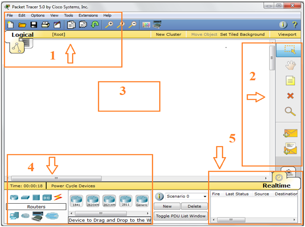
When you open Cisco Packet Tracer you will find this simple interface.
- 1mark which is a classic in every Windows application with file, edit and so on
- 2mark, if you need to talk about is the part from top to bottom, which is the first place in our area have put some work allows us to choose the network elements or icons. The second (hand sign) again put in the work area ensures adherence to individual network elements. 3section is used to text any note on work screen. The fourth (deletion) x sign is used for deleting the selected item. The fifth for magnifying to enlarge the work done in work screen. The sixth and seventh icon are used to run ping command directly rather going to CLI
- 3mark is the portion of our work done (work screen)
- 4mark in part, contains Routers as shown however it contains no. of networking devices .
- 5mark is used for checking result which are shown in the lower right corner as shown, generally it’s a ping command or PDU list window, only two cases are seen rather successful or failure.
Router
- 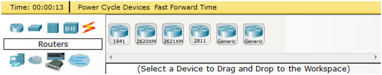
Switch
- 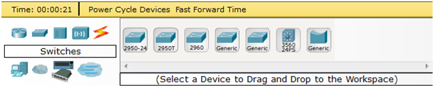
Hub
- 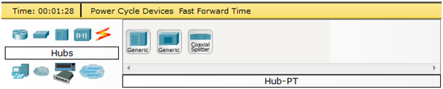
Wireless Devices
- 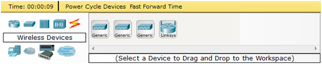
Connection Cables
- 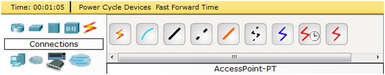
End Devices
- 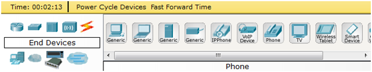
Wan Emulation
- 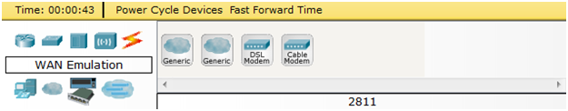
Custom-Made Devices
- 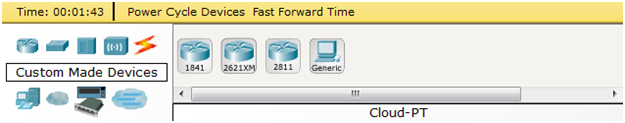
Multiple Connection Devices
- 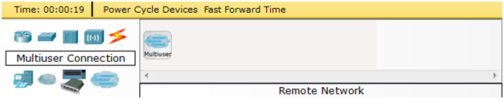
Ping
- 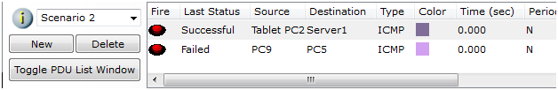